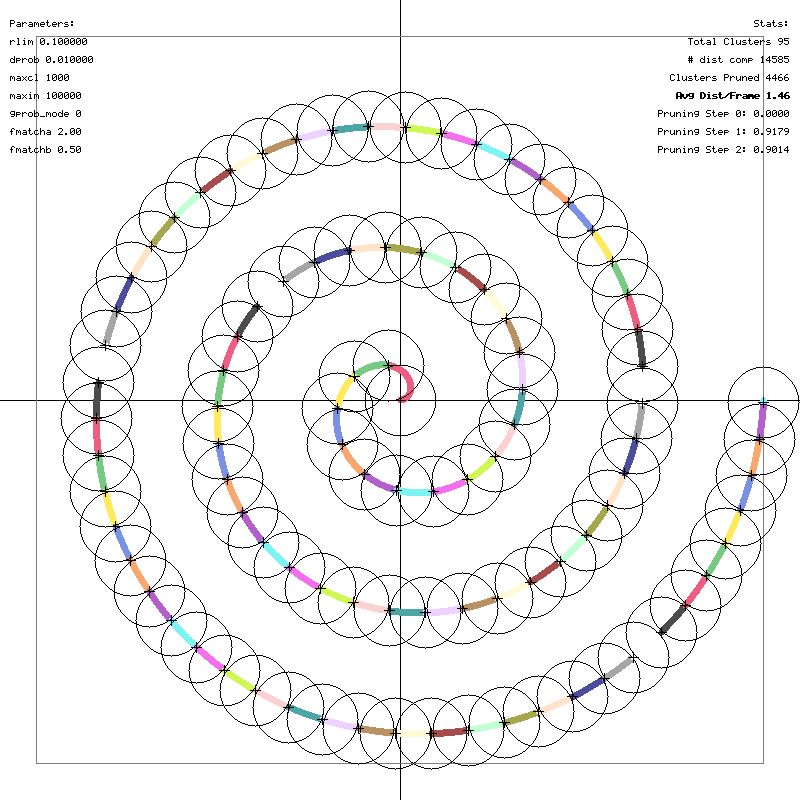
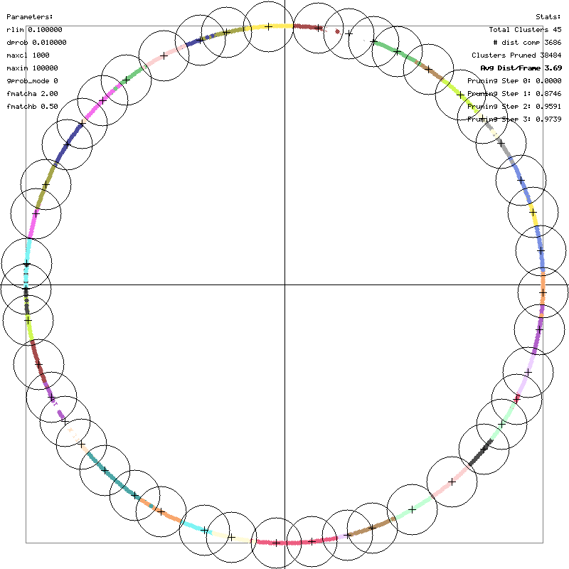
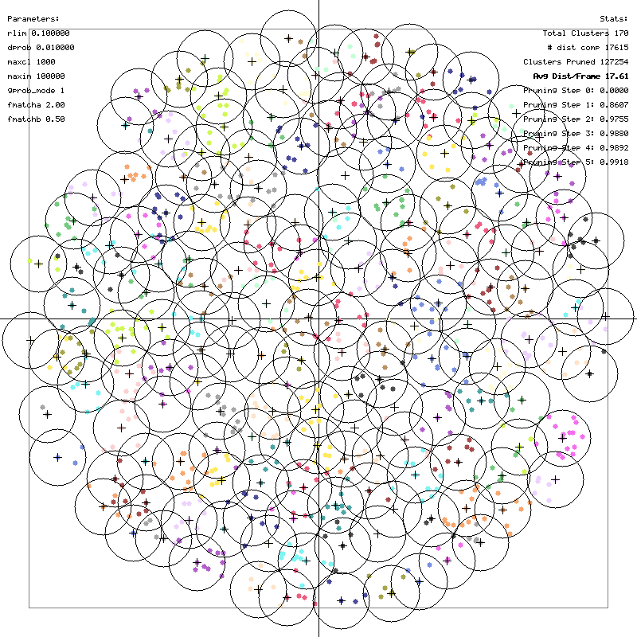
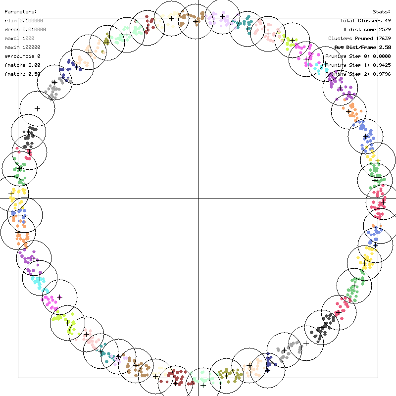

Benchmarks
This page documents the performance of the gric-cluster tool.
Test Environment
- Data: Synthetic 128-dimensional sequences generated via
gric-mktxtseq. - Compiler: GCC/Clang with
-O3 -march=native -funroll-loops(AVX2 enabled).
1. Slow Moving Point on 2D Spiral
Description:
A point moving slowly along a spiral trajectory. This tests the algorithm's "short-term memory".
Since the point moves slowly, it stays within the same cluster or a neighboring cluster for
multiple frames. The algorithm's probability ranking (prob) ensures the most recently matched
clusters are checked first.
Command:
Result:

* Time: ~36 ms * Calls: ~14.6k (for 10000 frames)2. Random Point on 2D Circle
Description:
Points appearing randomly on a unit circle. This demonstrates geometric solving. Since the
manifold is 1D (circle) embedded in 2D, the triangle inequality allows efficient pruning. With
rlim=0.1 and unit radius, there are ~60 clusters. For any new point, usually 2 anchor clusters
are close enough to "triangulate" the position or prune the rest.
Command:
./gric-mktxtseq 1000 bench_circle_rand.txt 2Dcircle -shuffle
./gric-cluster 0.1 bench_circle_rand.txt
Result:

* Time: ~6 ms * Calls: ~3.7k (~3.7 calls per frame). This validates the expectation that after finding 1-2 close clusters, the rest are pruned efficiently.3. Random Points on 2D Spiral (-gprob)
Description:
Points appearing randomly on a spiral. Unlike the circle, the spiral has complex local geometry.
Using -gprob allows the algorithm to learn the geometric relationships (neighbors in signal
space) even if they are not neighbors in time.
Command:
./gric-mktxtseq 1000 bench_spiral_rand.txt 2Dspiral3 -shuffle -noise 0.03
./gric-cluster 0.1 bench_spiral_rand.txt -gprob
Result:

* Time: ~21 ms * Calls: ~17.6k.4. Recurring Sequence (-tm)
Description:
A pattern (circle traversal) that repeats 10 times with noise (0.04). This creates a recurring
sequence of clusters. The Transition Matrix (-tm) option learns these transitions.
Command:
./gric-mktxtseq 100 bench_recurring.txt 2Dcircle -repeat 10 -noise 0.04
./gric-cluster 0.1 bench_recurring.txt -tm 1.0
Result:

* Time: ~8 ms * Calls: ~2.6k. Ideally, if the sequence is perfectly predicted, calls per frame approaches 1 (just verifying the predicted cluster). Here it's ~2.6, showing strong predictive performance.High-Dimensional Benchmarks
Scenario 1: Random Walk (1000 frames, 128D)
Dataset:
- 1000 frames, 128 dimensions.
- Random walk pattern (highly correlated).
- rlim=0.5.
Results:
| Mode | Total Time (ms) | Dist Calls | Notes |
|---|---|---|---|
| Standard | ~39 ms | 1,846 | Baseline performance. |
Transition Matrix (-tm 1.0) |
~38 ms | 1,832 | Slight reduction in calls by using history. |
Geometric Prob (-gprob) |
~37 ms | 1,846 | Efficient candidate ranking. |
Scenario 2: Uniform Random (1000 frames, 128D)
Dataset:
- 1000 frames, 128 dimensions.
- Uniform random distribution (uncorrelated, "hard" clustering).
- rlim=2.5.
Results:
| Mode | Total Time (ms) | Dist Calls | Notes |
|---|---|---|---|
| Standard (Triangle Ineq) | ~756 ms | 985,683 | Fast metric evaluation (AVX2) dominates. |
4-Point Pruning (-te4) |
~11,811 ms | 605,013 | Reduced calls by ~40%, but high logic overhead. |
5-Point Pruning (-te5) |
~98,744 ms | 559,962 | Reduced calls by ~45%, but very high logic overhead. |